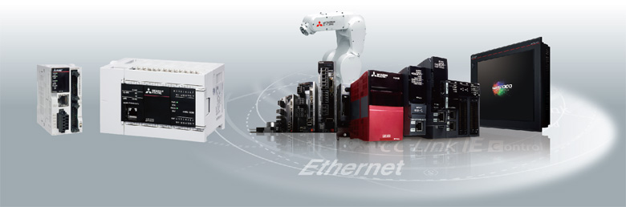

MELSEC iQ-F Series iQ Platform

Membawa Platform iQ
ke tingkat berikutnya.
Platform iQ meminimalkan TCO * dengan menyediakan
solusi inovatif untuk:
Membangun sistem produksi yang stabil dengan peningkatan produktivitas
Mengurangi waktu dari pengembangan sistem hingga memulai siklus produk yang lebih pendek
Mengelola dan memperbaiki sistem secara efisien untuk mengurangi waktu henti dan mempertahankan produktivitas
Memastikan kualitas produk dengan memproses data kontrol dan data produksi dalam jumlah besar secara cepat dan
membangun ketertelusuran
*TCO : Total Cost of Ownership
Platform iQ
PLC & HMI
- 1.Kinerja bus berkecepatan tinggi sangat meningkatkan kinerja sistem secara keseluruhan dengan kinerja bus sistem berkecepatan tinggi (150 × kecepatan konvensional *1)
- 2.Standarisasi program dengan blok fungsi modul dan label modul yang telah ditentukan sebelumnya
- 3.Fungsi keamanan yang seragam dan kuat
*1Perbandingan dengan FX3U
Jaringan
- 1.Dapatkan pengambilan data tanpa kehilangan data dengan komunikasi berkecepatan tinggi CC-Link IE Field 1 Gbps (kinerja penyegaran tautan 40 × tingkat konvensional *1)
- 2.Konektivitas tanpa hambatan dengan setiap perangkat menggunakan SLMP *2
*1Perbandingan dengan FX3U
*2SLMP: Protokol Pesan Tanpa Batas
Lingkungan Rekayasa
- 1.Lingkungan pemrograman intuitif GX Works3 mengurangi biaya pengembangan.
- 2.Gambar konfigurasi modul dapat dibuat melalui pembacaan langsung dari perangkat keras yang sebenarnya.
- 3.Berbagi parameter di beberapa perangkat lunak rekayasa melalui MELSOFT Navigator.
